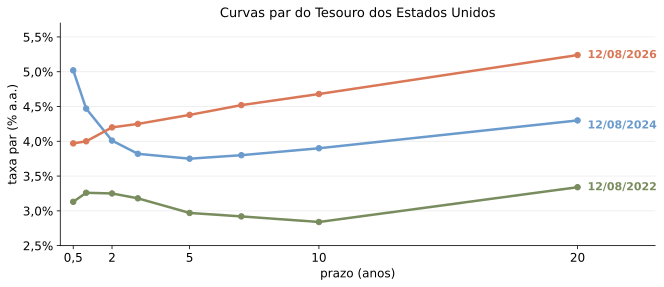

Ferramentas básicas para análise financeira
e o valor do dinheiro no tempo
O valor do dinheiro no tempo
- Se uma firma gasta R$ 540 milhões hoje e recebe US$ 100 milhões daqui a um mês, houve ganho financeiro?
- Precisamos fazer duas conversões: entre moedas e entre datas.
- A taxa de câmbio traduz dólares em reais numa mesma data.
- A taxa de juros traduz valores entre datas.
- Para depois: com incerteza, o risco também afeta o valor.
Diagrama de Fluxo de Caixa
- Um diagrama de fluxo de caixa é uma representação linear da cronologia dos fluxos de caixa esperados.
- Auxilia na visualização de um problema financeiro.
- Suponha que você esteja emprestando $10.000 hoje e que você será pago em duas parcelas anuais de $6.000.
Regras Básicas
Tabela 4.1 — As três regras da movimentação no tempo
| Regra | Movimentação no tempo | Valor | Fórmula |
|---|---|---|---|
| Regra 1 | Apenas valores no mesmo ponto no tempo podem ser comparados ou combinados. | ||
| Regra 2 | Para movimentar um fluxo de caixa para um ponto no futuro, devemos compô-lo. | Valor futuro de um fluxo de caixa | \(\displaystyle FV_n = C \times (1+r)^n\) |
| Regra 3 | Para movimentar um fluxo de caixa para um ponto no passado, devemos descontá-lo. | Valor presente de um fluxo de caixa | \(\displaystyle PV = C \div (1+r)^n = \frac{C}{(1+r)^n}\) |
Um pouco mais formalmente
Seja \(\left\{ CF_{t}\right\} _{t=1}^{T}\) o fluxo de caixa (positivo ou negativo) de um ativo.
Valor presente é
\[PV=\sum_{t=1}^{T}\frac{CF_{t}}{\left(1+r_{t}\right)^{t}},\]
em que \(r_{t}\) é a taxa anual de um ativo com o mesmo padrão de risco que \(CF_{t}\).
- Valor presente líquido, VPL, (net present value, NPV) de um investimento com um custo inicial \(C_{0}<0\)
\[NPV=C_{0}+\sum_{t=1}^{T}\frac{CF_{t}}{\left(1+r_{t}\right)^{t}}\]
VPL e taxa de desconto
- Investimento inicial
- −R$ 1.000
- Fluxos, anos 1–5
- 300; 400; 400; 350; 300
- TIR
- 22,18% a.a.
r < TIR e VPL > 0.
Um problema simples
Suponha que planejemos aplicar $1.000 hoje e $1.000 no final de cada um dos dois próximos anos. Se obtivermos uma taxa de juros de 10% sobre nossa aplicação, quanto teremos daqui a três anos?
Diagrama:
Um problema simples — solução
Cada aplicação é uma saída; o saldo acumulado no ano 3 é uma entrada.
Linearidade do VP e FV
“Com base na primeira regra da movimentação no tempo podemos deduzir uma fórmula geral para avaliar uma sequência de fluxos de caixa: se quisermos encontrar o valor presente de uma sequência de fluxos de caixa, simplesmente somamos os valores presentes de cada fluxo de caixa.”
- Tradução (na verdade, mais geral): \(PV\left\{ CF_{t}\right\} _{t=0}^{T}\) (e \(FV_{t}\left\{ CF_{t}\right\} _{t=0}^{T}\)) são lineares.
Perpetuidades e anuidades
- Dois ativos oferecem fluxos simples e têm VP fácil de calcular.
- Bons atalhos para calcular VP de muitos outros ativos.
Perpetuidade
- Título que paga cupom fixo a um intervalo determinado para sempre.
- Raro na prática:
- Reino Unido: “Consols”
- Instrumento aceito para capital bancário de “tier 1”.
- Normalmente, não são perpetuidades puras (porque são callable).
- Diagrama:
Anuidade
- Título que paga um cupom fixo até uma data determinada, quanto matura sem pagamento de um valor de face.
- Diagrama:
- Cálculo (supondo taxa constante \(r_{t}=r\)):
\[PV=\sum_{t=1}^{N}\frac{C}{\left(1+r\right)^{t}}.\]
Cálculo
E maneira de lembrar
Soma telescópica da P.G. \(a_{n+1}=qa_{n}\)
\[\begin{aligned} \left(1-q\right)\left(a_{1}+...+a_{N}\right) & =\left(a_{1}+a_{2}+...+a_{N}\right)\\ & \quad -\left(a_{2}+a_{3}+...+a_{N}q\right)\\ & =a_{1}-a_{N}q \end{aligned}\]
Logo,
\[\sum_{n=1}^{N}a_{n}=\frac{a_{1}-a_{N}q}{1-q}\]
Derivação da fórmula da anuidade
Para anuidade,
\[a_{1}=\frac{C}{1+r};\quad a_{N}=\frac{C}{\left(1+r\right)^{n}};\quad q=\left(1+r\right)^{-1}\]
Logo,
\[PV_{anuid.}=\frac{C-C\left(1+r\right)^{-N}}{\left(1+r\right)-1}=\frac{C}{r}-\frac{C}{r\left(1+r\right)^{N}}\]
Anuidade = perpetuidade − cauda
Estenda os pagamentos para sempre — depois retire a cauda que começa em \(N+1\).
\[PV_{anuid.}=\frac{C}{r}-\frac{C/r}{(1+r)^N}=\frac{C}{r}\left[1-(1+r)^{-N}\right]\]
Cálculo (cont.)
\[PV_{anuid.}=\frac{C-C\left(1+r\right)^{-N}}{\left(1+r\right)-1}=\frac{C}{r}-\frac{C}{r\left(1+r\right)^{N}}\]
Para perpetuidade, basta tomar \(N\rightarrow\infty\),
\[PV_{perp.}=\frac{C}{r}\]
Perpetuidade pode ser rara na prática, mas é útil como ferramenta para maturidades longas e possivelmente incertas.
Anuidade, perpetuidade e taxa de desconto

Com \(C=100\) e \(r=10\%\), uma anuidade de 30 anos vale $942,69; a perpetuidade vale $1.000.
Perpetuidade com crescimento
- Suponha pagamento inicial \(C\) com crescimento à taxa \(g\).
- Condição para VP finito: \(g<r\).
Perpetuidade com crescimento — fórmula
Voltando à PG, tomamos \(q=\frac{\left(1+g\right)}{\left(1+r\right)}\).
\[PV_{gr\_perp}=\frac{a_{1}}{1-q}=\frac{C/\left(1+r\right)}{1-\frac{1+g}{1+r}}=\frac{C}{r-g}\]
- Aplicação para expiração incerta.
- Aplicação para anuidade crescente: \(PV_{gr\_ann}=\frac{C}{r-g}\left[1-\left(\frac{1+g}{1+r}\right)^{N}\right].\)
Composição de juros
- Muitas vezes se lê algo como:
- Juros de 6%a.a. compostos semestralmente.
- O que isso quer dizer?
APR e composição mensal
- Taxa percentual anual (APR, annual percent rate) é dada em termos de juros simples: 6%a.a. compostos mensalmente.
- Logo, taxa ao mês é \(\frac{6\%}{12}=0{,}5\%\).
- Composição é mensal.
- Dívida em \(n\) meses cresce com
\[\left(1+0{,}005\right)^{n}\]
Taxa efetiva anual (EAR) e composição contínua
- Taxa efetiva anual (EAR), com composição em fração \(\frac{1}{n}\) no ano,
\[\left(1+\frac{APR}{n}\right)^{n}\]
- Composição contínua:
\[\lim_{n\rightarrow\infty}\left(1+\frac{r}{n}\right)^{n}-1=e^{r}-1\]
Juros simples, compostos e contínuos

Em 30 anos: $1 vira $4,00 com juros simples, $17,45 com composição anual e $20,09 com composição contínua.
Taxas anuais efetivas para APR de 6%
Tabela 5.1 — Taxas anuais efetivas para uma APR de 6% com diferentes períodos de composição
| Intervalo de composição | Taxa anual efetiva |
|---|---|
| Anual | \(\displaystyle (1+0{,}06/1)^1 - 1 = 6\%\) |
| Semestral | \(\displaystyle (1+0{,}06/2)^2 - 1 = 6{,}09\%\) |
| Mensal | \(\displaystyle (1+0{,}06/12)^{12} - 1 = 6{,}1678\%\) |
| Diário | \(\displaystyle (1+0{,}06/365)^{365} - 1 = 6{,}1831\%\) |
Exemplo para discussão
- Lembre-se de que, para tomar emprestado $250.000 com uma hipoteca de 30 anos a 12% a.a., o pagamento anual é de $31.037.
- Suponha que o agente de crédito agora sugira a você que, ao invés de pagar uma taxa anual composta de 12%, seria mais conveniente e barato para você ter uma taxa mensal de 1%.
- Como haverá 360 pagamentos, o pagamento mensal da hipoteca será de:
\[\frac{\$250.000}{\dfrac{1}{0{,}01}-\dfrac{1}{0{,}01(1+0{,}01)^{360}}}=\$2.572\]
- O vendedor indica que seus pagamentos anuais seriam reduzidos de $31.037 para 12 × $2.572 = $30.864.
- Isto é estranho, já que a taxa composta anual equivalente a 1% é:
\[(1+0{,}01)^{12}-1=12{,}68\%.\]
Link Calculadora. * fator na primeira linha foi aproximado para 8,055
Taxas de juros
- Distinguir:
- Taxa nominal
- Taxa real
- Fluxos de caixa nominais, reais e qual taxa usar.
- Relação
\[\left(1+r_{real}\right)=\frac{1+r_{nom}}{1+\pi}\implies r_{real}\approx r_{nom}-\pi\]
Brasil: taxa nominal, inflação e juro real

Cálculo exato: \(\dfrac{1+r_{nom}}{1+\pi}-1 =\) 9,34%.
O atalho \(r_{nom}-\pi\) dá 9,78%, ou 0,44 p.p. acima do valor exato.
Dados locais: Selic em 17/06/2026; IPCA 12m divulgado em 01/05/2026.
Taxas de juros
\[\left(1+r_{real}\right)=\frac{1+r_{nom}}{1+\pi}\implies r_{real}\approx r_{nom}-\pi\]

Fonte: FRED (séries GS1, CPIAUCSL), dados mensais de 1953 a 06/2026. Inflação: variação do CPI em 12 meses.
Curvas de juros
- Na definição geral de VP, permitimos que as taxas \(r_{t}\) fossem distintas ao longo do tempo.
- Em muitas aplicações, como no caso do cálculo do valor de perpetuidades e anuidades, simplificamos a análise impondo \(r_{t}=r\) para todo \(t\).
- “Curva de juros plana”.
- No entanto, dependência da taxa de desconto no período de pagamento pode ser bastante importante em alguns momentos no tempo e aplicações particulares
A curva muda com o tempo

A taxa depende do prazo — e do momento.
Fonte: U.S. Treasury, CMTs de 30/11/2006, 30/11/2007 e 28/11/2008. Reconstrução da Figura 5.3 de Berk & DeMarzo com curvas par oficiais.
Curvas diferentes, perguntas diferentes
Títulos de referência
YTM de títulos selecionados
Curva par
cupom que faz P = 100
Curva zero
desconto de um pagamento
Curva forward
taxa futura implícita
Aqui, usamos a curva par.
Curva invertida
- Curva invertida, tipicamente, entendida como mau sinal.

Fonte: FRED (GS1, GS10, indicador de recessão USREC do NBER), dados mensais de 1953 a 06/2026. Cinza: recessões; verde: curva normal (10a ≥ 1a); laranja: curva invertida.
Custo de oportunidade do capital
- Curva descreve oportunidades alternativas de investimento.
- E risco?
Apêndice: convenções de fluxo de caixa
Primeiro, fixe a perspectiva: fluxos da firma, do investidor ou do projeto?
Neste curso, o sinal explícito manda. Posição, cor e setas são redundância visual.
Setas entrando ou saindo da linha do tempo são ambíguas: a linha marca datas, não o caixa.
Apêndice: demonstração por L’Hôpital
Queremos calcular
\[L=\lim_{n\rightarrow\infty}\left(1+\frac{r}{n}\right)^{n}.\]
Faça \(x=1/n\). Então \(x\rightarrow 0^+\) e
\[\ln L=\lim_{x\rightarrow 0^+}\frac{\ln(1+rx)}{x}.\]
O limite é do tipo \(0/0\). Por L’Hôpital,
\[\ln L=\lim_{x\rightarrow 0^+}\frac{r/(1+rx)}{1}=r.\]
Logo, \(L=e^r\) e a taxa efetiva com composição contínua é
\[EAR_{cont}=e^r-1.\]